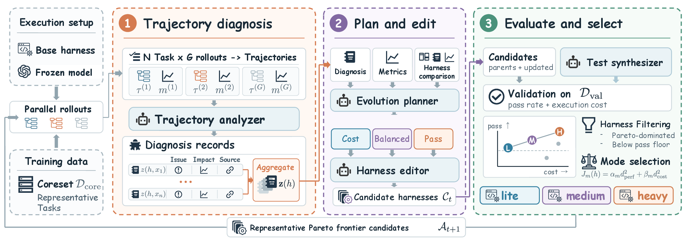
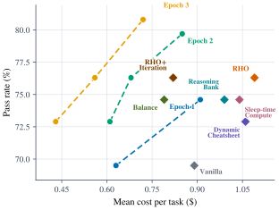
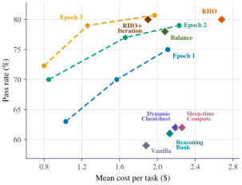
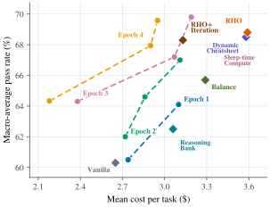

Learn from the trajectory
Diagnose failed attempts, redundant checks, and expensive exploration across multiple rollouts.
Recursive harness self-improvement
Better performance.
Smarter budgets.
Recursive Harness Self-Improvement with Pareto Optimization for Performance-Cost Trade-offs
Evolve the instructions, tools, and runtime policies around an AI agent. Find the sweet spot between what it can solve and what it costs.
A stronger agent.
A smaller bill.
Average pass-rate gain
Average cost reduction
Heavy mode vs. RHO
Across three benchmarks
GPT-5.5 × Codex
01 / The idea
An agent’s capability depends on how it is guided, what tools it has, and when it stops. HarnessPro improves that surrounding software through execution feedback.
Diagnose failed attempts, redundant checks, and expensive exploration across multiple rollouts.
Evaluate task performance and execution cost together. Keep candidates that advance the Pareto frontier.
Retain cost-focused, balanced, and performance-focused harnesses for different deployment budgets.
02 / The method
Specialized agents turn execution evidence into new harnesses. Each round retains strong candidates for the next round of evolution.

The trajectory analyzer identifies failures and avoidable computation, grounding its diagnoses in execution evidence.
The planner proposes updates with three performance–cost priorities. The editor implements executable candidate harnesses.
Fixed LLM-generated tests assess candidates. Pareto filtering and weighted selection retain the Lite, Medium, and Heavy modes.
No ground-truth solutions, official tests, or official grader feedback are used.
The final harnesses are frozen before evaluation with the official benchmark tests.
03 / Main results
Compare performance, cost, and task completion time for every method reported in the paper. Both model–agent pairs are shown below.
Tasks in a terminal environment.
59 test tasks · 10 evolution tasksResolve issues in real code repositories.
100 test tasks · 10 evolution tasksReconstruct programs from their behavior.
100 test tasks · 10 evolution tasks| Method | Terminal-Bench 2 | SWE-Bench Pro | ProgramBench | ||||||
|---|---|---|---|---|---|---|---|---|---|
| P (%) ↑ | C ($) ↓ | T (s) ↓ | P (%) ↑ | C ($) ↓ | T (s) ↓ | P (%) ↑ | C ($) ↓ | T (s) ↓ | |
P = pass rate. C = mean cost per task. T = mean task completion time. Bold marks the best mean in each column within a model–agent pair.
HarnessPro reports mean ± sample standard deviation over three test runs on Terminal-Bench 2 and SWE-Bench Pro, and two on ProgramBench. ProgramBench pass rate is the macro-average fraction of test cases passed per task. Latency is reported for comparison and is not an optimization objective.
Heavy mode has the highest pass rate in all six benchmark–model comparisons, with lower mean cost than RHO in every case.
On SWE-Bench Pro with GPT-5.5 and Codex, Medium mode reaches 79.0% pass rate at $1.26 per task, compared with RHO’s 80.0% at $2.68.
On Terminal-Bench 2 with GPT-5.5 and Codex, Lite mode costs $0.43 per task versus Vanilla’s $0.89, while pass rate rises from 69.5% to 72.9%.
04 / Recursive improvement
A harness improves over multiple rounds of diagnosis, editing, and selection. These curves from the paper track performance and cost across epochs with GPT-5.5 and Codex.

Enlarge figure ↗
Enlarge figure ↗
Enlarge figure ↗05 / Inside an evolved harness
Evolved harnesses route tasks to an execution profile. Runtime hooks guide tool use as the assigned budget is consumed.
Try a mode, choose a task profile, then play the walkthrough or drag the tool-call slider.
00 / 44
Work on the task with the selected reasoning effort. Gather the evidence needed for an effective solution.
Simulated progression using the frozen harness settings. The hook blocks attempts beyond the tool-call limit.
Better agents don’t always
need bigger budgets.
Keep in touch with the work
Cite the arXiv preprint. The source code is available on GitHub.
@misc{pan2026harnesspro,
title = {HarnessPro: Recursive Harness Self-Improvement
with Pareto Optimization for
Performance-Cost Trade-offs},
author = {Zhuoshi Pan and ZhiYuan Feng and Yukuo Cen
and Honglin Lin and Junru Lu and Zhongxia Chen
and Shuo Yang and H. Vicky Zhao and Jie Tang},
year = {2026},
eprint = {2610.26770},
archivePrefix = {arXiv},
primaryClass = {cs.LG},
url = {https://arxiv.org/abs/2610.26770}
}